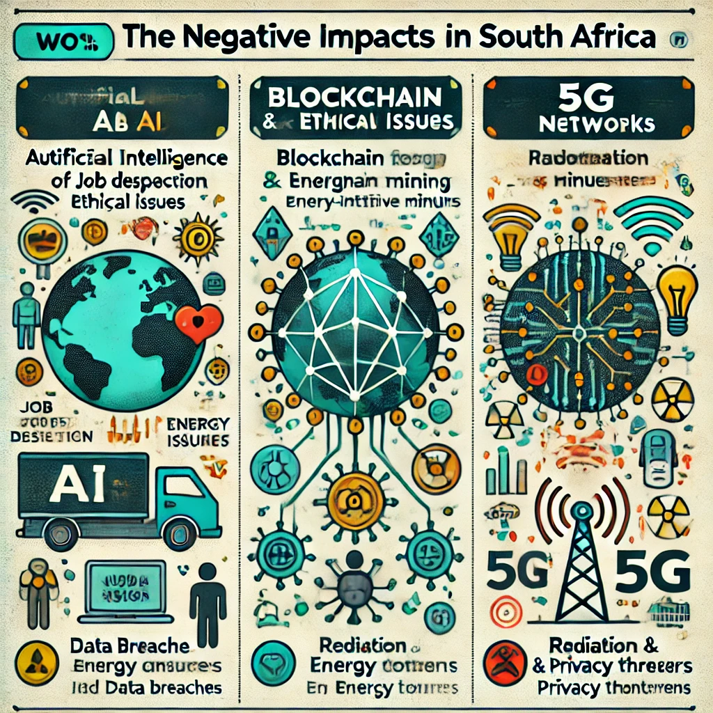

Global IT Trends and Their Negative Impacts
Here is the infographic showing key global IT trends and their negative impacts.

References
- • Frey, C. B., & Osborne, M. A. (2017). The future of employment: How susceptible are jobs to computerization? Technological Forecasting and Social Change, 114, 254-280. https://doi.org/10.1016/j.techfore.2016.08.019
• Baracas, S., Hardt, M., & Narayanan, A. (2019). Fairness and machine learning. Retrieved from https://fairmlbook.org
• Zuboff, S. (2019). The Age of Surveillance Capitalism: The Fight for a Human Future at the New Frontier of Power. PublicAffairs.
- • Krause, M. J., & Tolaymat, T. (2018). Quantification of energy and carbon costs for mining cryptocurrencies. Nature Sustainability, 1(11), 711-718. https://doi.org/10.1038/s41893-018-0152-7
• Sedlmeir, J., Buhl, H. U., Fridgen, G., & Keller, R. (2020). The energy consumption of blockchain technology: Beyond myth. Business & Information Systems Engineering, 62(6), 599-608. https://doi.org/10.1007/s12599-020-00656-x
- • Porambage, P., Okwuibe, J., Liyanage, M., Taleb, T., & Ylianttila, M. (2018). Survey on multi-access edge computing for Internet of Things realization. IEEE Communications Surveys & Tutorials, 20(4), 2961-2991. https://doi.org/10.1109/COMST.2018.2849509
• Russell, C. L. (2018). 5G wireless telecommunications expansion: Public health and environmental implications. Environmental Research, 165, 484-495. https://doi.org/10.1016/j.envres.2018.01.016
• World Health Organization. (2020). What are electromagnetic fields? Retrieved from https://www.who.int